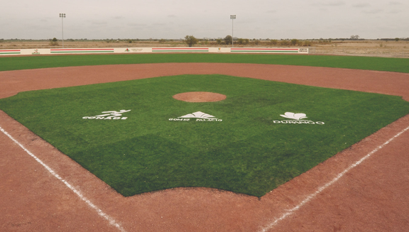
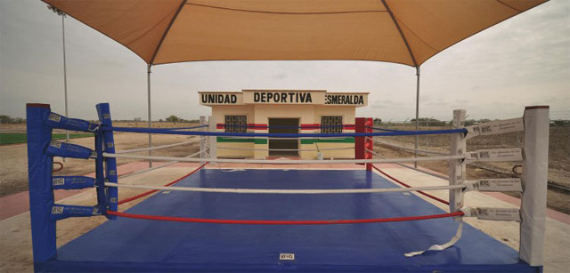
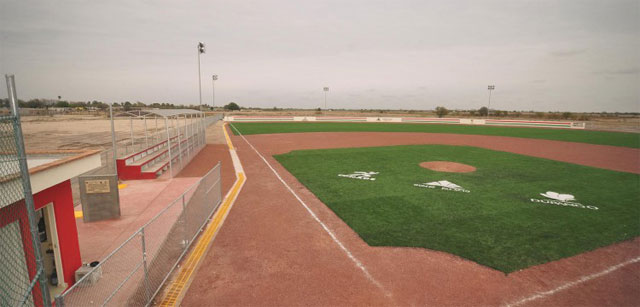
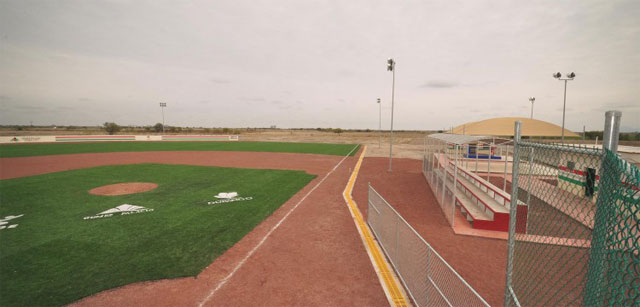

       <div class="pages navbar-through">
          <!-- Page, data-page contains page name-->
          <div data-page="esmeralda" class="page">
            <!-- Scrollable page content-->
            <div class="page-content">
                <div class="cover-preview row">
                    
                </div>
                <div id="gcgpage-content" class="col-xs-12">
                    <h3 id="titulo-entrada">DEPORTIVA LA ESMERALDA</h3>
                    <div class="resumen-page">
                 Obras como la unidad Deportiva Esmeralda que con una gran alegría recibieron los habitantes del ejido La Esmeralda, vendrá a servir...
                    </div>
                    
                    <div id="gcg-contenido">
                        <p>Obras como la unidad Deportiva Esmeralda que con una gran alegría recibieron los habitantes del ejido La Esmeralda, vendrá a servir como un factor importante para elevar la calidad de vida de los habitantes, y marcan un antes y un después en la convivencia vecinal y en el rescate de los valores que genera el deporte en las personas.</p>
                   
                      <p class="section-bold-title">UNA INVERSIÓN DE 6 MILLONES DE PESOS</p>
                      <p>En el acto donde la unidad deportiva, creada con una inversión de seis millones de pesos, se puso a la disposición de todos los habitantes del ejido y de las comunidades aledañas a La Esmeralda, el presidente municipal de Gómez Palacio, como anfitrión del evento, dio las gracias al gobernador Jorge Herrera Caldera por la gestión importante de recursos por parte de la Comisión Nacional del Deporte, asÌ como el apoyo para la realización de más proyectos de este tipo.</p>
                     <div class="row">
                           
                       </div>
                     <p>Es que con estos proyectos para la práctica del deporte en diferentes disciplinas, los habitantes de estas comunidades ejidales tendrán la oportunidad de practicar una actividad que les traer· muchos beneficios físicos y sociales, se les ayudar· en la erradicación de las costumbres que puedan ser dañinas y hábitos que no son sanos para los jóvenes, asÌ como el alejamiento de las drogas y sustancias nocivas.</p>
                      <div class="row">
                           
                       </div>
                     <p>Pero sobre todo esta obra fomentará la convivencia entre los vecinos de La Esmeralda y de otras comunidades, permitiendo contar con más armonía en los habitantes y entre las familias, que requieren un sano esparcimiento y distractor de las situaciones que se venían presentando con anterioridad</p>
                     <div class="row">
                           
                       </div>
                     
                    
                     
                      
                        
                    </div>
                    <footer class="share-page">
                        <span class="lblShare">Compartir:</span>
                        <ul>
                           <a href="#" id="shareMail"><li></li></a>
                           <a href="#" id="shareFB"><li></li></a>
                           <a href="#" id="shareTwitter"><li></li></a>
                           <a href="#" id="shareWhats"><li></li></a>
                        </ul>
                    </footer>
                </div> 
                 
               
            </div>
          </div>
        </div>
        
       